Our Recipes
19 recipes · Last updated Mar 16, 2026
🕐 Recently Added
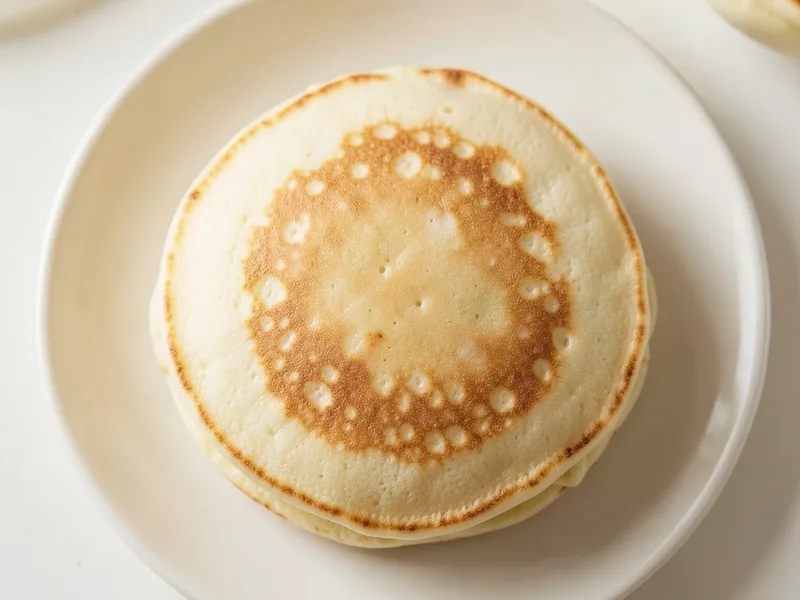
Buttermilk Pancakes
Light, fluffy, and ridiculously easy. The kind of pancakes that make weekday mornings feel like a lazy Sunday.
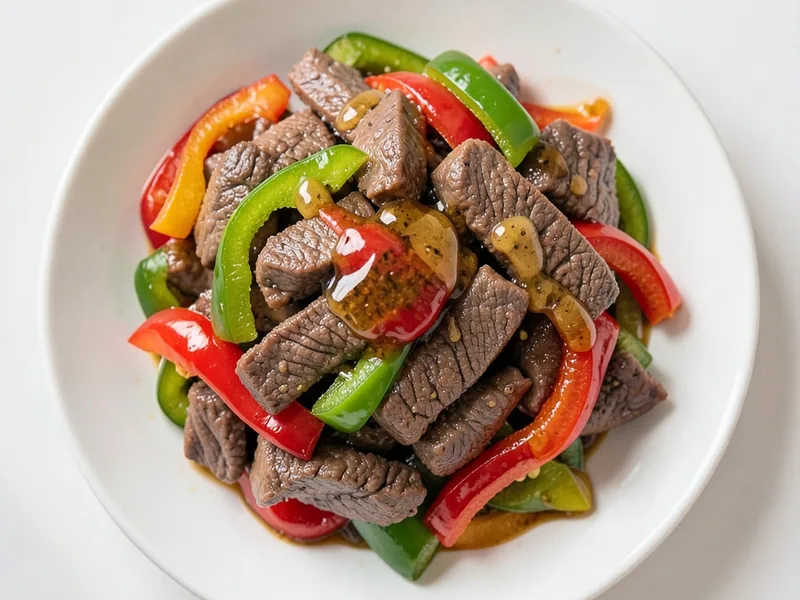
Maria's Pepper Steak
A sweet and savory stir-fry with tender flank steak, bell peppers, and a honey-soy glaze that's hard to mess up.
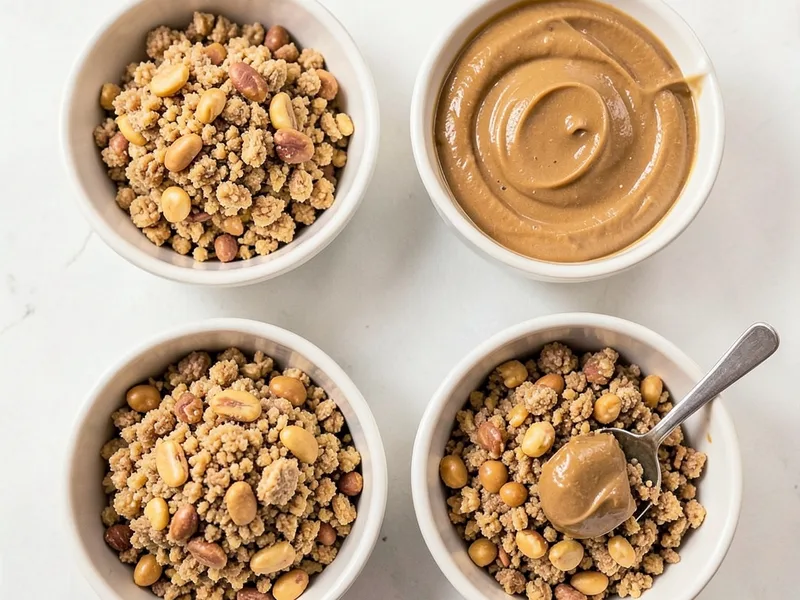
Peanut Butter Balls
Four ingredients, no oven, and dangerously easy to make. Crunchy, sweet, and packed with peanut butter.
🍰 Desserts 4 recipes
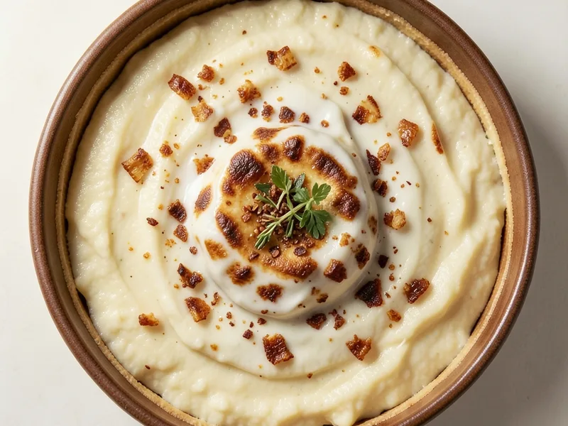
Basic Vanilla Pudding
Creamy, old-fashioned stovetop pudding made from scratch. Top it however you like.
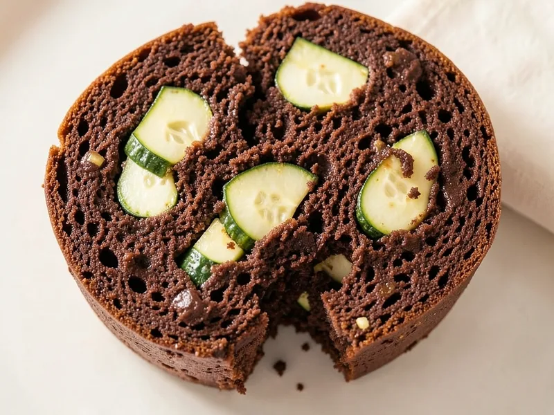
Chocolate Zucchini Bread
Moist, fudgy double chocolate bread hiding a whole zucchini in every loaf. No one will believe there's a vegetable in this.
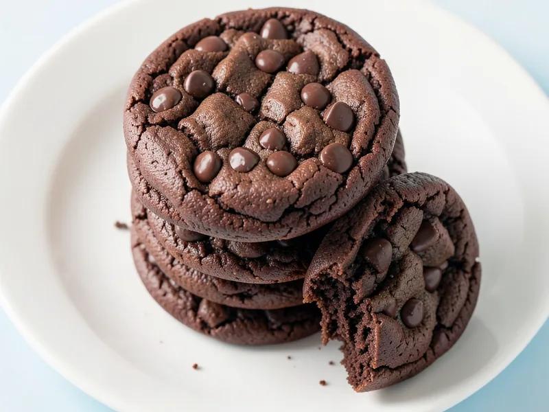
Double Chocolate Cookies
Rich, fudgy cookies loaded with semisweet chips and dark chocolate chunks. A hit of espresso makes the chocolate sing.

White Chocolate Cranberry Oatmeal Cookies
Chewy, hearty oatmeal cookies loaded with sweet white chocolate chips and tangy dried cranberries, warmly spiced with cinnamon and kissed with vanilla.
🍽️ Main Dishes 8 recipes
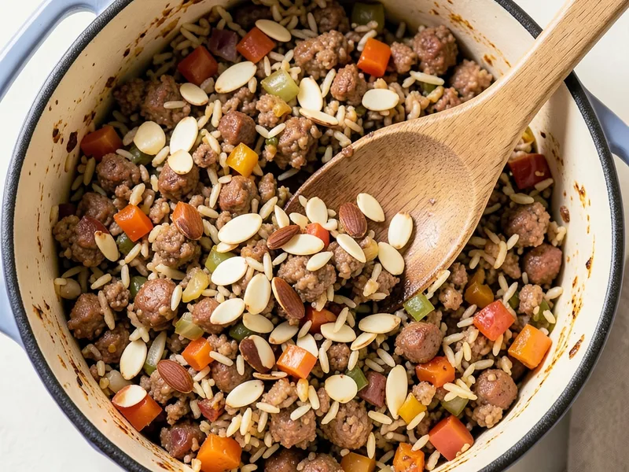
Almond Delight
A hearty, savory casserole of browned breakfast sausage, wild rice, and toasted slivered almonds baked together with vegetables and chicken noodle soup mix for incredible depth of flavor. Cozy, crowd-pleasing, and surprisingly elegant.
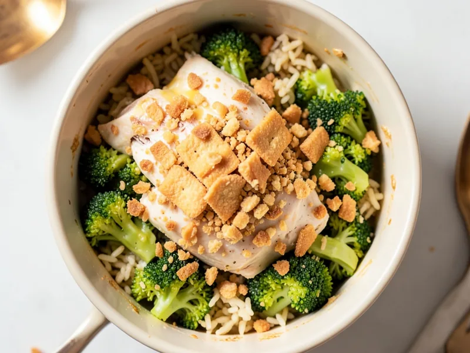
Chicken Broccoli Rice Casserole
Cheesy one-pot comfort with tender chicken, broccoli, and rice, all topped with a buttery Ritz cracker crunch.
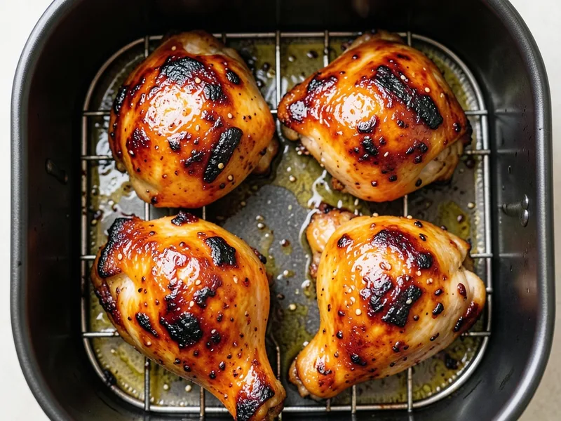
Gochujang Chicken
Crispy air fryer chicken thighs with a sweet-spicy gochujang glaze that caramelizes into something dangerously good.
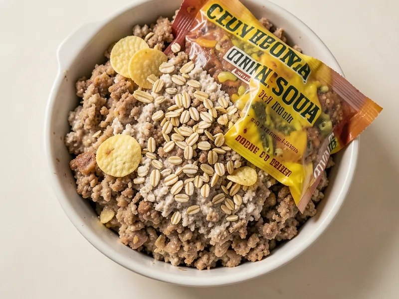
Kathy's Meatloaf
Old-school comfort meatloaf held together with oatmeal, crushed saltines, and a packet of onion soup mix.
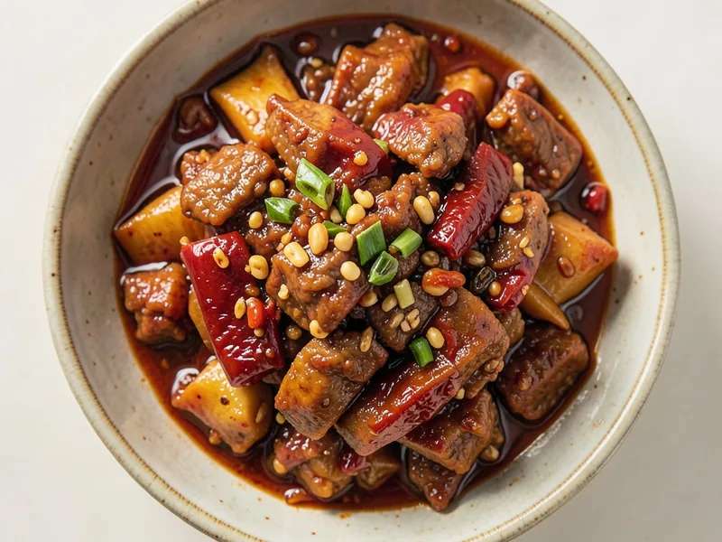
Mapo Tofu
The real-deal Sichuan classic — spicy, tongue-numbing, and absolutely not optional without rice.
Maria's Pepper Steak
A sweet and savory stir-fry with tender flank steak, bell peppers, and a honey-soy glaze that's hard to mess up.
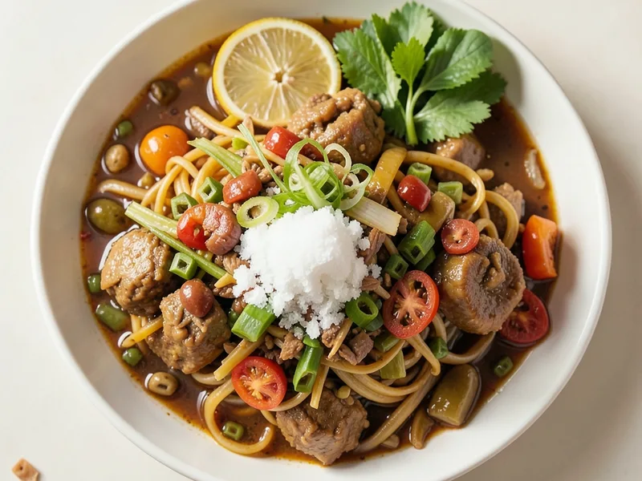
Pailin's Authentic Pad Thai
The real-deal Thai street food classic with tamarind, palm sugar, and all the proper bits.
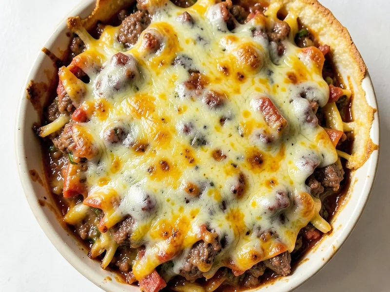
Speedy Taco Bake
A beefy, cheesy taco casserole with a Bisquick crust that bakes up golden in 35 minutes.
🫙 Sauces and Dressings 1 recipe
🍲 Soups and Stews 4 recipes
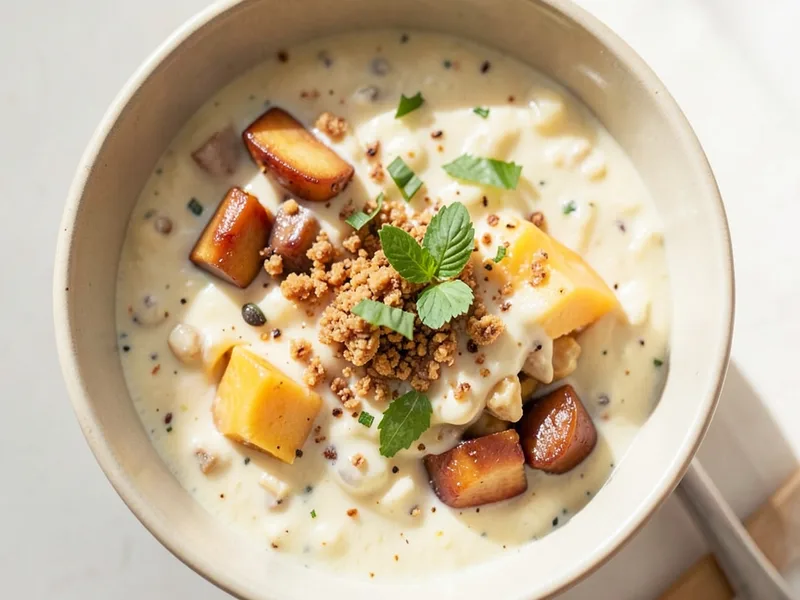
Delicious Ham and Potato Soup
A cozy, creamy comfort bowl that comes together in under an hour.
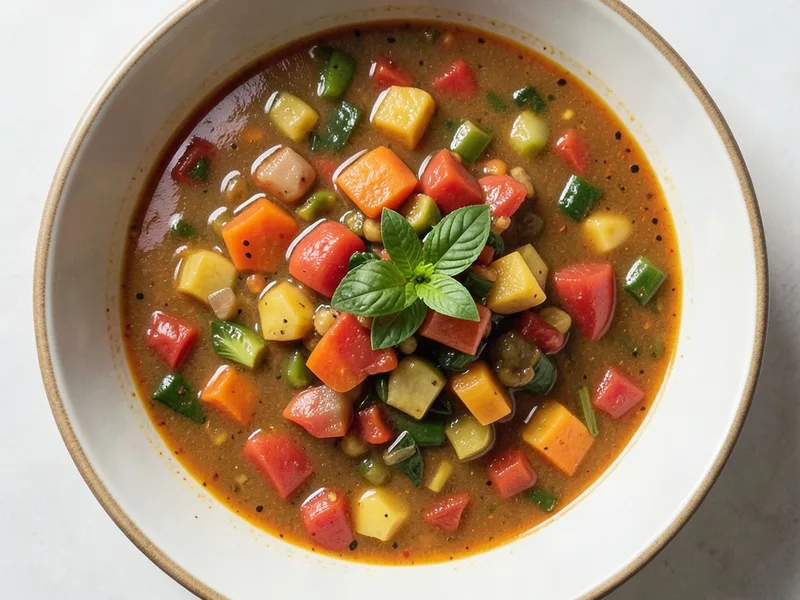
Jamie's Minestrone Soup
A hearty, vegetable-loaded Italian soup that gets better the longer it simmers.
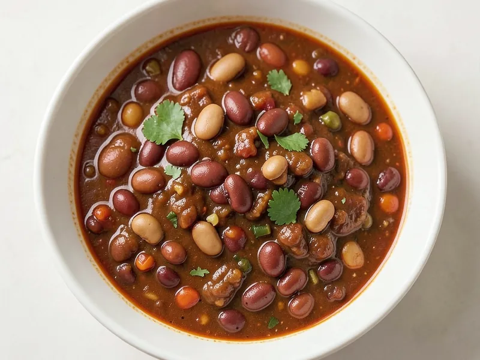
LaBonte Chili
A no-fuss family chili with two kinds of kidney beans and a kick from Lipton onion soup mix.

Quick and Easy Chicken Noodle Soup
A simple, comforting shortcut soup for when you don't have time to make it from scratch.
No recipes found